Calibrating Touch Screen Monitor
This procedure describes how to calibrate the touch screen monitor.
| For the following action... | Refer to... |
|---|---|
| Calibrate touch screen on USB monitor - eGalaxTouch Software | Step 1 |
| Calibrate touch screen on USB monitor - MicroTouch MT 7 Software | Step 2 |
| Calibrate touch screen on Serial port monitor - MicroTouchTouchWare Software | Step 3 |
-
Calibrating the USB cable touch screen monitor with
eGalaxTouch Software.
-
Open the eGalaxTouch Configure Utility application.
For Windows XP Console PC
- Select
Programs > eGalaxTouch > Configure Utility or double click on the
eGalaxTouch shortcut on the desktop.
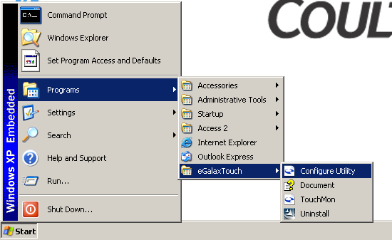
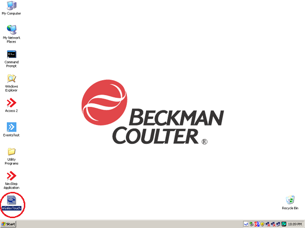
For Windows 8 Console PC- Press Windows key and select Configure Utility on the Start menu or double click on the eGalaxTouch shortcut on the desktop.
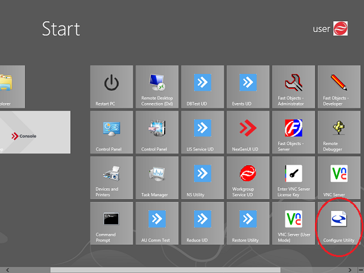
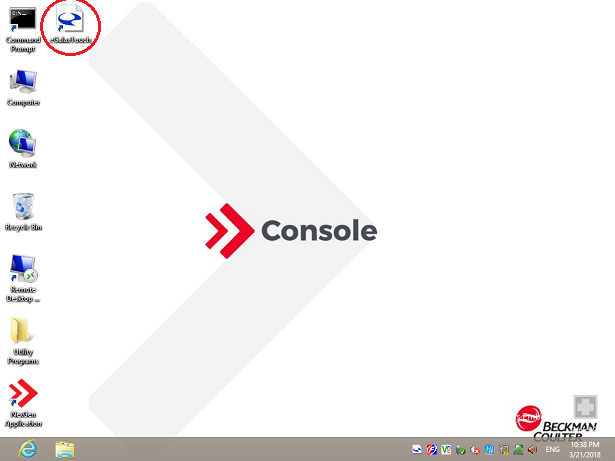
- Select
Programs > eGalaxTouch > Configure Utility or double click on the
eGalaxTouch shortcut on the desktop.
-
From the
eGalax Touch : USB Controller box, select
Tools > 4 Points Calibration.
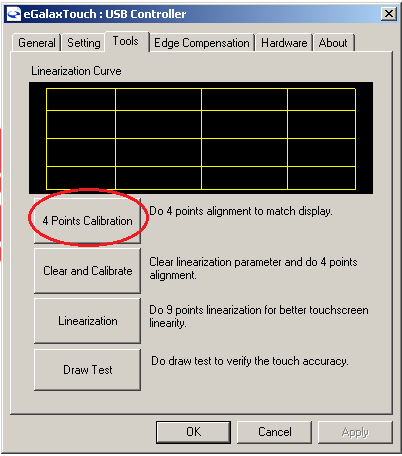
-
When the calibration program starts, firmly press the indicated target on the lower left corner of the screen. Continue firmly pressing targets on the screen until all four test points have been touched.
Note: If beeping sound is generated when touching the screen, go to sub-step. g to disable the beeping sound. This scenario usually occurs on a Black Front Console PC with Windows XP.
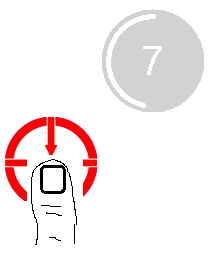
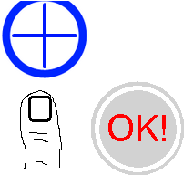
-
There will be a pop up indicating that the 4 points calibration completed, press
OK to continue.
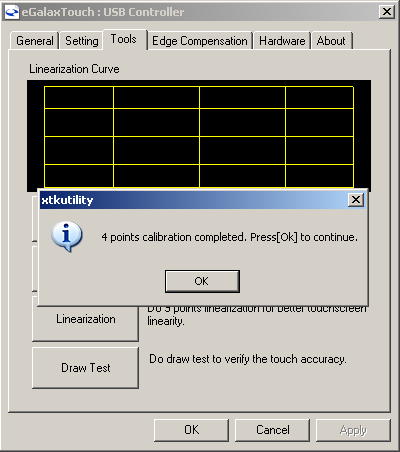
Note: There are more options to choose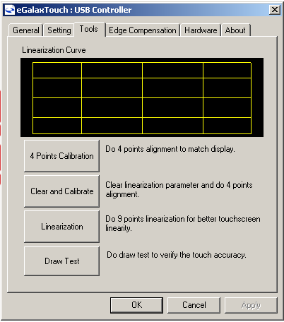
- Clear and Calibrate - Clear linearization parameter and do 4 points alignment.
- Linearization - Do 9 points linearization parameter and do 4 points alignment.
- Draw Test - Do draw sets to verify touch accuracy.
- Select Apply > OK to save the calibration, then exit the eGalax Touch : USB Controller box.
-
Start the user interface, if required.
Note: If the pointer moves in the opposite direction of finger travel, load the latest touch screen driver and calibrate. Refer to the Peripherals: Installing Touch Screen Monitor Driver (DxI and Access2) procedure in the DxI manual.
-
(Perform this step only if touching the screen generates beeping sound from the Console PC) Disable the touch screen beeping sound.
- Open the eGalaxTouch Configure Utility application.
- On the
eGalazTouch : USB Controller box, select
Setting.
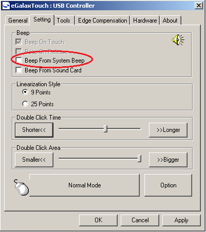
- Uncheck Beep From System Beep.
- Select Apply > OK to save and exit the eGalazTouch : USB Controller box.
-
Open the eGalaxTouch Configure Utility application.
-
Calibrating the USB cable touch screen monitor with
MicroTouch MT 7 Software.
-
Press the
Windows key at the lower left corner of the keyboard, and then from the Start menu:
- For Windows XP, select
Programs > MicroTouch MT 7 > Control Panel
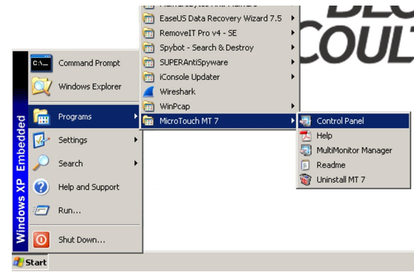
- For Windows 8, select Control Panel for MicroTouch MT 7 or if not shown type control panel and select.
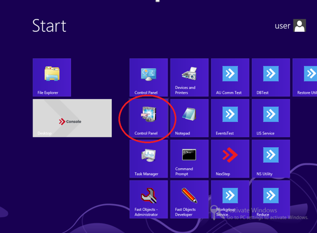
- For Windows XP, select
Programs > MicroTouch MT 7 > Control Panel
-
From the MT 7 control panel window, select
Calibrate.
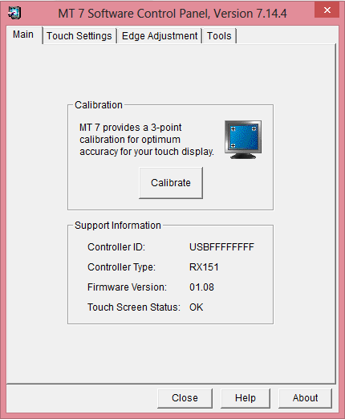
-
When the calibration program starts, firmly press the indicated target on the lower left corner of the screen. Continue firmly pressing targets on the screen until all three test points have been touched.
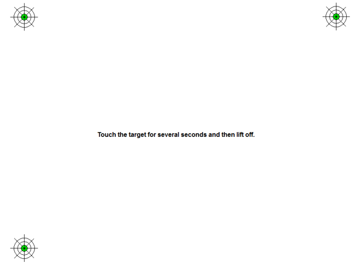
-
There will be a pop up indicating the calibration data was completed successfully. The display also has a test function.
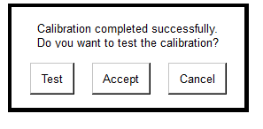
-
Select
Accept to the calibration complete pop up window
Note: The test function opens another screen where the calibration can be tested. If it is not functioning correctly, another calibration may be required.
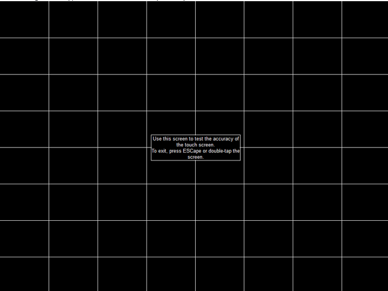
-
There will be another pop up to confirm the calibration. Select
Yes to complete the calibration process.
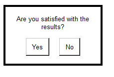
-
Start the user interface, if required.
Note: If the pointer moves in the opposite direction of finger travel, load the latest touch screen driver and calibrate. Refer to the Peripherals: Installing Touch Screen Monitor Driver (Access or DxI) procedure in the DxI manual.
-
Press the
Windows key at the lower left corner of the keyboard, and then from the Start menu:
-
Calibrate the serial cable touch screen monitor.
-
Press the
Windows key at the lower left corner of the keyboard, and then from the Start menu:
- For Windows NT, select Programs > MicroTouchTouchWare > MicroTouch TouchWare.
- For Windows XP, select Programs > Accessories > TouchWare > TouchWare.
-
From the
MicroTouch window, select
Calibrate, and then select the
Calibrate button.
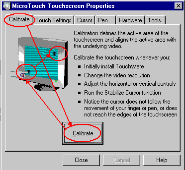
Note: If Calibrate is not an available option, then select Find in the Hardware to detect the touch screen monitor. - When the calibration program starts, firmly press the indicated target on the lower left corner of the screen until the Touch Enabled message occurs (three seconds for response).
-
Press the target on the upper right corner of the touch screen until the Touch Enabled message occurs (three seconds for response).
Note: A dialog box is displayed, indicating the calibration data is saved after the second target is entered. Do not touch the screen during this save.
- Select Done to the Calibration Complete popup window.
-
Start the user interface, if required.
Note: If the pointer moves in the opposite direction of finger travel, load the latest touch screen driver and calibrate. Refer to the Peripherals: Installing Touch Screen Monitor Driver (Access or DxI) procedure in the DxI manual.
-
Press the
Windows key at the lower left corner of the keyboard, and then from the Start menu:
-
If the touch screen is not found when entering the TouchWare application, change the COM port. Find the touch screen on a new COM port.
Note: This section is compatible only for monitors using a serial port connection for the touch screen feature.
-
Select the
Find Touch Screen button in the
Hardware tab.
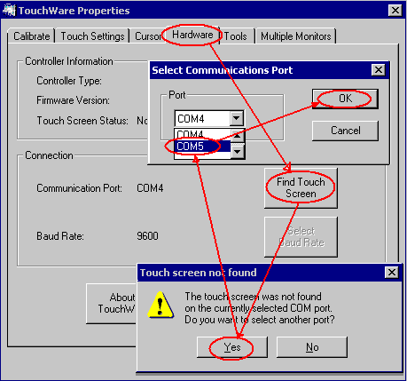
Note:- If the monitor is not detected on COM1 and the cables are connected correctly, then move the serial connector from COM1 to COM4 or COM5. In the TouchWare window, choose to detect the monitor again. This time, select the COM4 or COM5 port when prompted to select another port.
- On early instruments, noise in the serial cable could lock up the COM1 port on the PC. The resolution was to use a special serial cable (P/N 986389). If the COM1 port lockup problem is suspected and the special cable is not available, then move the touch screen serial connector to the COM4 or COM5 port.
- For Windows NT only if the COM5 port is used, select Start > Settings > Control Panel > Ports > COM5 > Settings, and then configure the port from the default of 75 bps to 9600 bps.
- Calibrate the touch screen after it is found on the new COM port.
-
Select the
Find Touch Screen button in the
Hardware tab.
-
If the error
The touch screen is in use by another application occurs, end the MTS process.
-
Use the Task Manager to end the
MtsTsMon.exe and
ctfmon.exe processes.
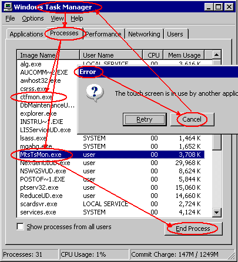
- Start the TouchWare application.
- Calibrate the monitor.
-
Use the Task Manager to end the
MtsTsMon.exe and
ctfmon.exe processes.